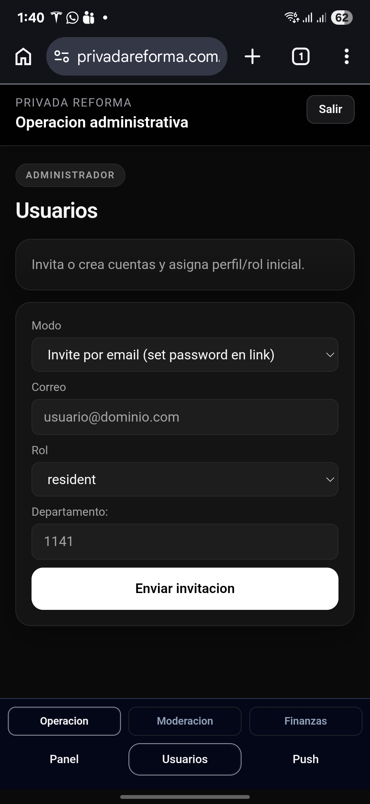

Crear usuarios
Ruta: /admin/users
Sirve para dar de alta nuevas cuentas de manera ordenada. Aqui se define si la persona sera residente, guardia o administrador, y se asigna su unidad cuando aplica. Esta pantalla es clave porque controla quien entra a cada parte de la app.